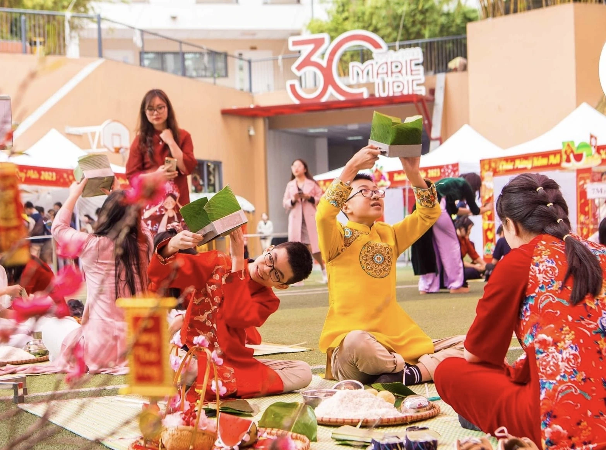
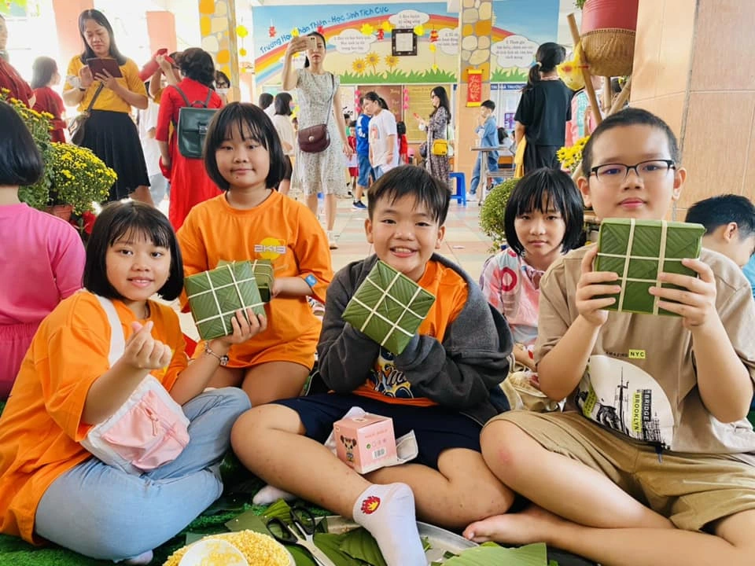

Ý nghĩa và phong tục ngày Tết cổ truyền
1. Dọn dẹp, trang trí nhà cửa
Trước Tết, mọi người quét dọn nhà cửa sạch sẽ để “gạt bỏ điều xui”, đón năm mới an lành. Nhà được trang trí bằng hoa mai, hoa đào, câu đối đỏ…
2. Gói bánh chưng, bánh tét
Bánh chưng, bánh tét tượng trưng cho đất trời và lòng biết ơn tổ tiên. Cả gia đình quây quần gói bánh tạo nên không khí Tết ấm áp.

3. Chúc Tết và lì xì
Người nhỏ tuổi chúc Tết ông bà, cha mẹ; người lớn mừng tuổi (lì xì) để chúc may mắn, học giỏi, ngoan ngoãn.
4. Cúng ông Công – ông Táo, cúng giao thừa
Là nghi lễ tiễn Táo quân về trời và đón năm mới, thể hiện ước mong gia đình bình an, đủ đầy.
5. Thăm họ hàng, mồ mả tổ tiên
Con cháu về quê sum họp, thăm viếng mộ tổ tiên để nhớ về cội nguồn.
6. Kiêng kỵ ngày Tết
Như: không quét nhà ngày mùng 1, không cãi vã, không nói điều xui… để giữ may mắn đầu năm.
7. Du xuân, đi chùa đầu năm
Mọi người đi chùa cầu bình an, đi chơi xuân để tận hưởng không khí năm mới.
Những phong tục ngày Tết không chỉ giữ gìn bản sắc dân tộc mà còn giúp gắn kết gia đình, nhắc nhở mỗi người trân trọng yêu thương và hướng tới một năm mới tốt đẹp hơn.
Tết đối với học sinh
Tết đối với học sinh không chỉ là khoảnh khắc giao mùa mà còn là khoảng thời gian được tạm gác lại những bài kiểm tra, những buổi học căng thẳng để trở về bên gia đình thân yêu. Tết là lúc chúng em được mặc áo mới, được nhận những phong bao lì xì đỏ thắm và được nghe những lời chúc đầy yêu thương từ ông bà, cha mẹ.
Trong lòng học sinh, Tết còn là hương thơm của bánh chưng, bánh tét đang sôi trên bếp, là sắc mai vàng, đào hồng khoe nụ trước hiên nhà, là tiếng cười rộn ràng trong những buổi sum họp. Những ngày Tết trôi qua thật chậm, để lại trong chúng em cảm giác bình yên và ấm áp khó quên.
Tết cũng là dịp để mỗi học sinh nhìn lại một năm đã qua, biết trân trọng công sức của thầy cô, cha mẹ và tự hứa với bản thân sẽ cố gắng hơn trong năm mới. Với chúng em, Tết không chỉ là ngày lễ truyền thống mà còn là mùa của yêu thương, hy vọng và những ước mơ tuổi học trò.